How to open, use and present Lighthouse: the governance layer that reconciles a Sales, Finance, Operations and Legal AI agent for a 50-store Walmart U.S. pilot. Each agent is owned by a department lead, and a named executive makes the final call.
Companies now run several specialised AI agents. Each can be right on its own and still disagree with the others: Sales sees demand, Finance sees a loss, Operations sees a full distribution center, Legal sees a risky claim. Lighthouse is the layer above the agents. Every agent answers in the same format with cited evidence. The department that owns the agent signs off on it, Lighthouse reconciles the four positions, and the executive decides. Every step lands in a tamper-evident log.
| Person | Role | Does | Cannot |
|---|---|---|---|
MC Maya Chen | Executive · decision owner | Sees the full packet and all four sign-offs. Approves, rejects or sends back. Can overrule a Sales, Finance or Ops block with a reason, and can decide when a sign-off is overdue. | Overrule Legal; approve before required sign-offs |
HB Hannah Brooks | Sales lead | Proposes promotions (submitting runs all four agents). Owns the Sales agent: demand, pricing, channel. | Sign for other departments |
DO David Okafor | Finance lead | Owns the Finance agent: margin, ROI, break-even. Confirms, adjusts or blocks its answer. | Decide the case |
LM Luis Moreno | Operations lead | Owns the Operations agent: inventory, DC capacity, fulfillment. Also proposes inventory moves. | Decide the case |
PR Priya Raman | Legal lead | Owns the Legal agent: claims, privacy, state rules. Approves, approves with conditions, or rejects. Her rejection is final. | Approve a case a rule prohibits |
JE Jordan Ellis PIN 4210 | System administrator | Edits rules, thresholds and the Live AI / Replay setting (each change needs a reason). Resets the demo, tests providers, runs the test lab. | Sign off or decide (separation of duties) |
Each department lead owns their agent. They can re-run it, confirm it, change its answer with a reason, or block it. Nobody runs another department’s agent.
A lead only signs when their agent says hold or reject, needs a review, is under 65% confident, or lacks evidence. In the 12 demo cases, about two out of three lanes clear automatically.
The packet shows what the AI said and what each person signed. The executive can overrule Sales, Finance or Operations with a written reason. Legal can never be overruled.
Otherwise the lane shows Cleared automatically. A lead can still step in on any lane.
Reject and Send back are allowed any time after the agents run.
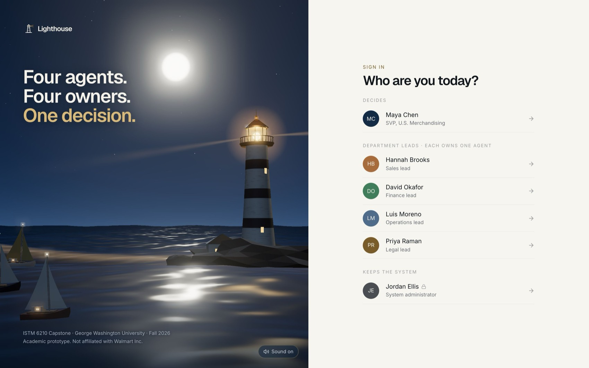
The story follows one promotion from proposal to sealed decision, with a detour that shows a human disagreeing with their AI.
| Time | Person | What the audience sees |
|---|---|---|
| 0:00–0:45 | Anyone | The problem, the five roles (sign-in screen) |
| 0:45–2:15 | Hannah · Sales | Submits D-2026-001; four agents run live; she lands on her own lane, cleared automatically |
| 2:15–3:15 | Priya · Legal | Only Legal is needed; she approves the claim with conditions |
| 3:15–4:30 | David · Finance | D-2026-003: his agent says reject; he re-runs it, then changes it to “proceed with conditions” with a reason |
| 4:30–6:15 | Maya · Executive | Her desk; D-2026-003 shows “AI said hold, sign-offs changed it”; D-2026-006 escalated; approves D-2026-001 |
| 6:15–7:15 | Maya | Flow (four parallel lanes) and the Dashboard |
| 7:15–8:00 | Jordan · Admin | Audit chain verification and the 18 acceptance tests |
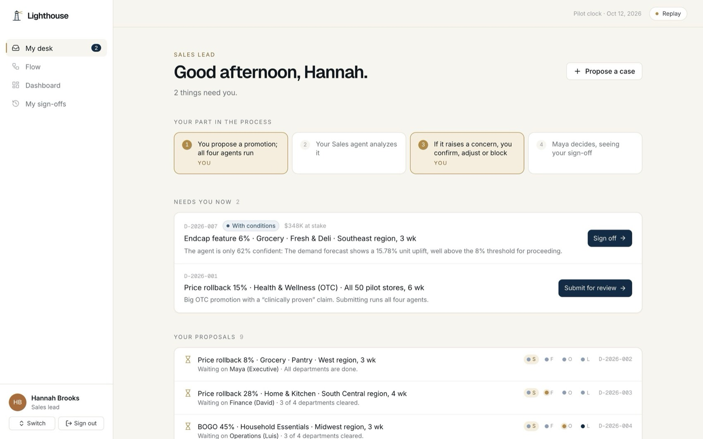
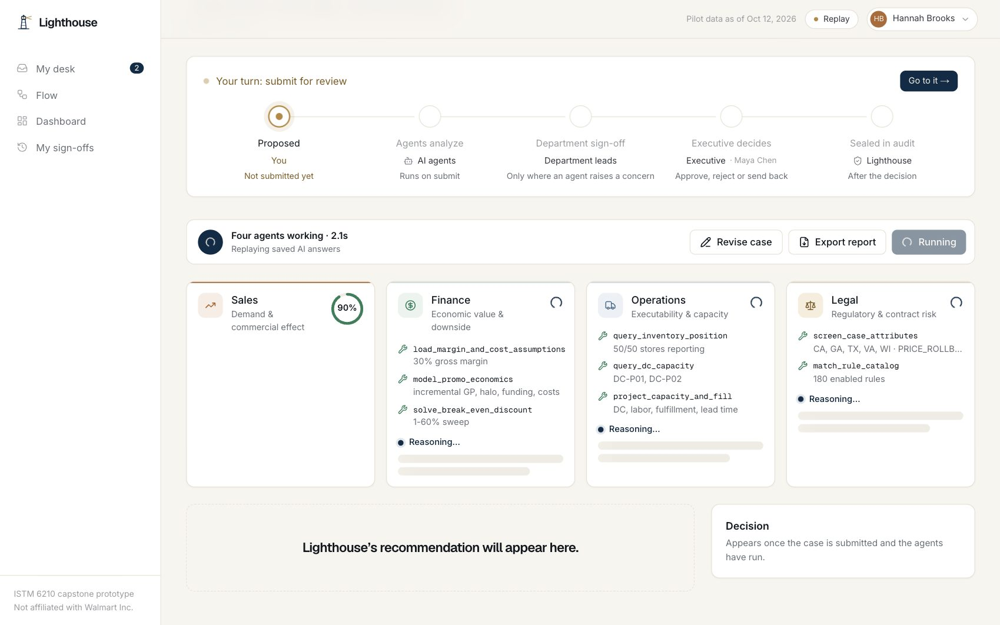
When the run finishes, Hannah lands on her own lane: the Sales agent says proceed (+23.5% unit uplift), so it cleared automatically. The journey bar shows 3 of 4 cleared · waiting on Legal.
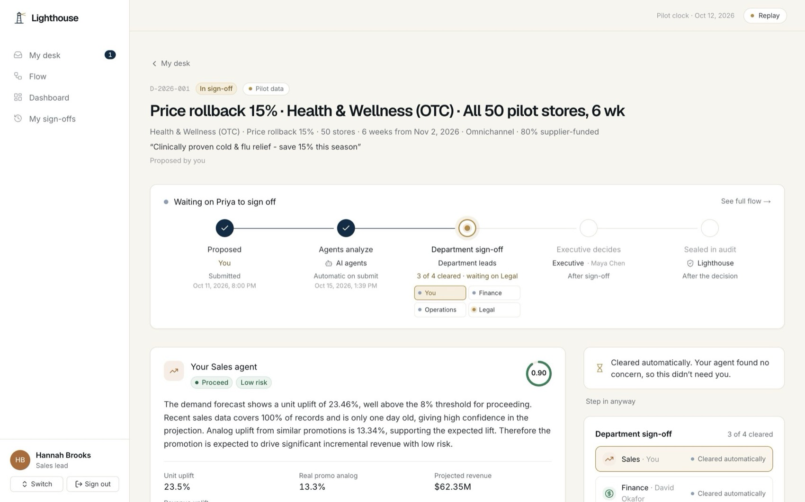
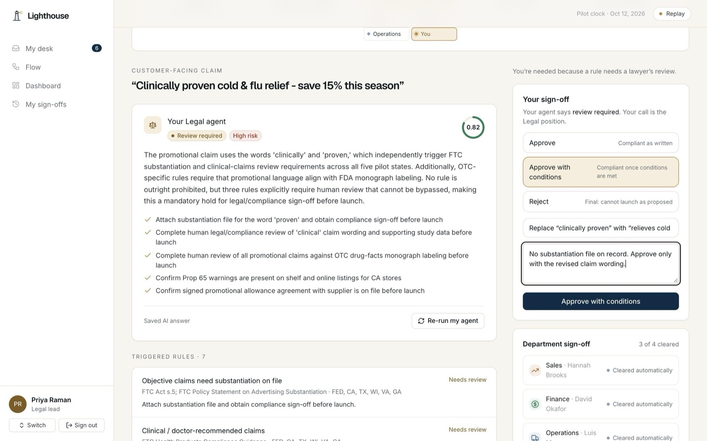
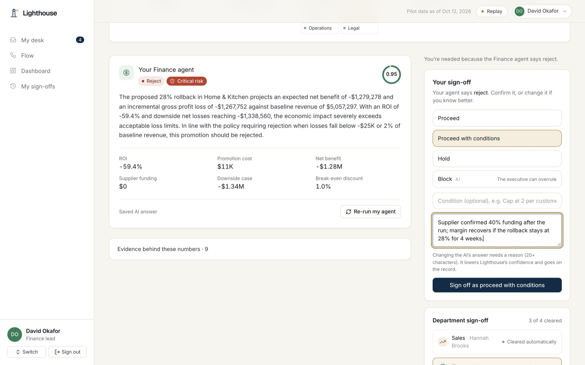
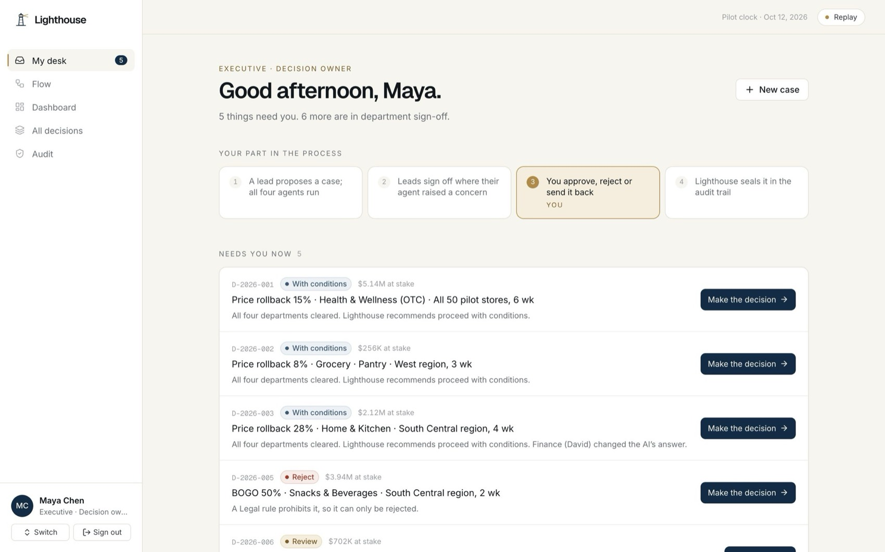
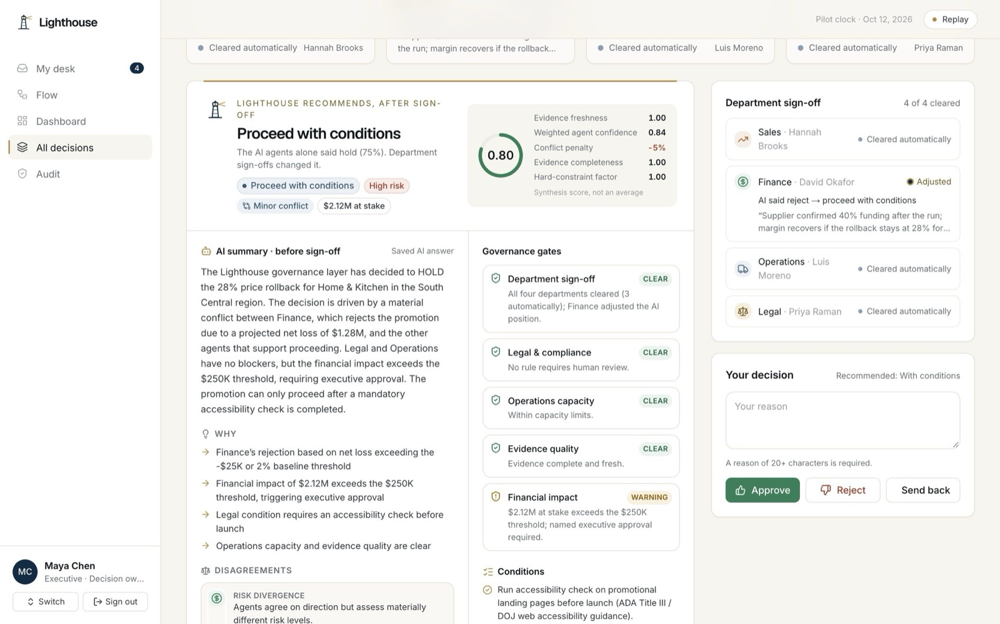
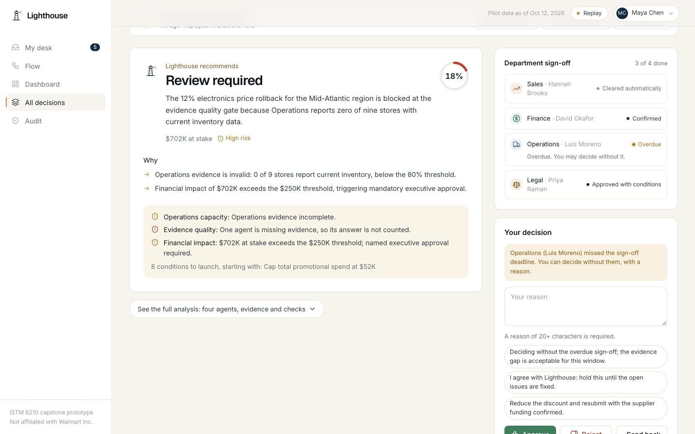
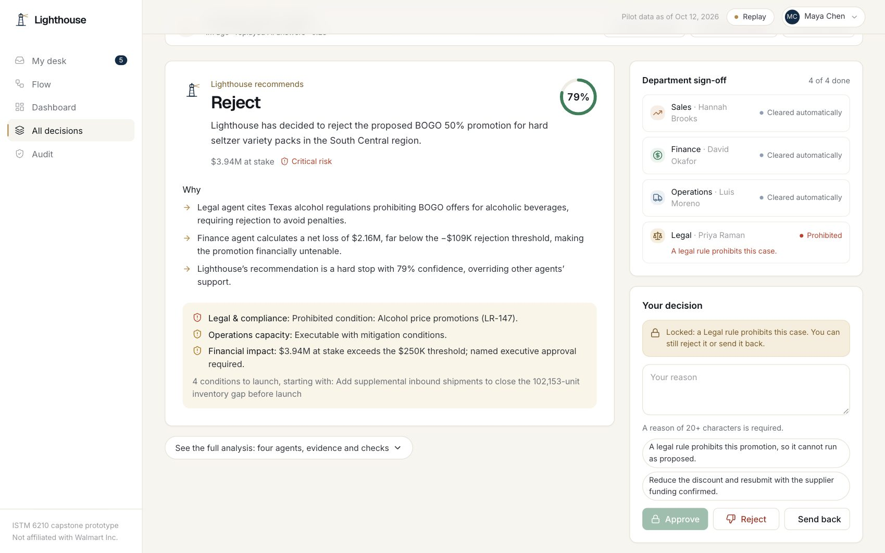
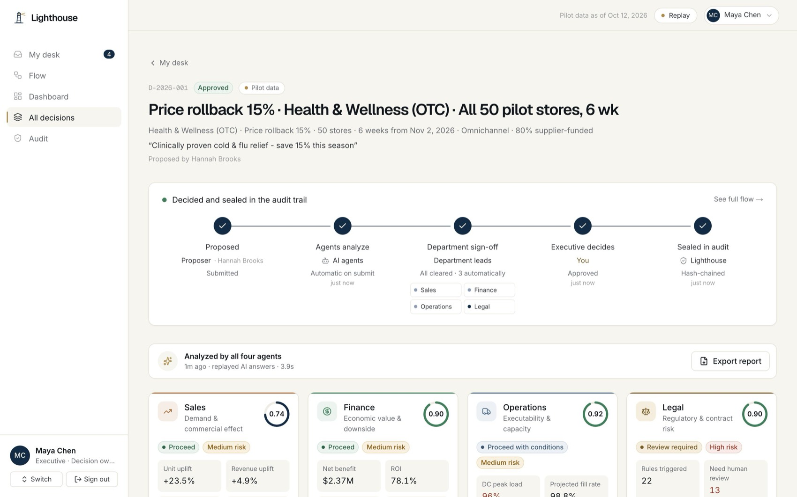
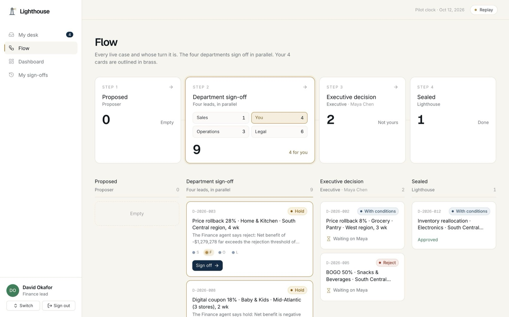
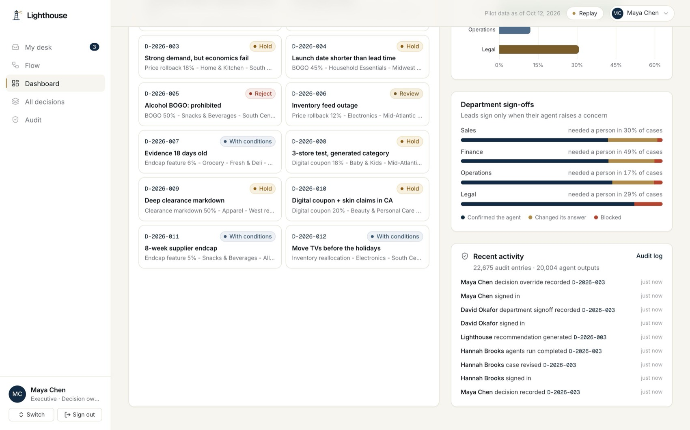
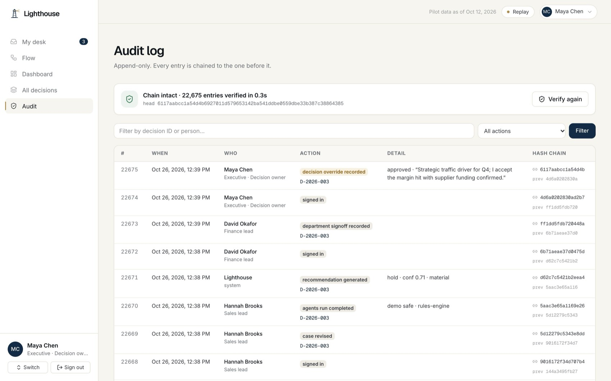
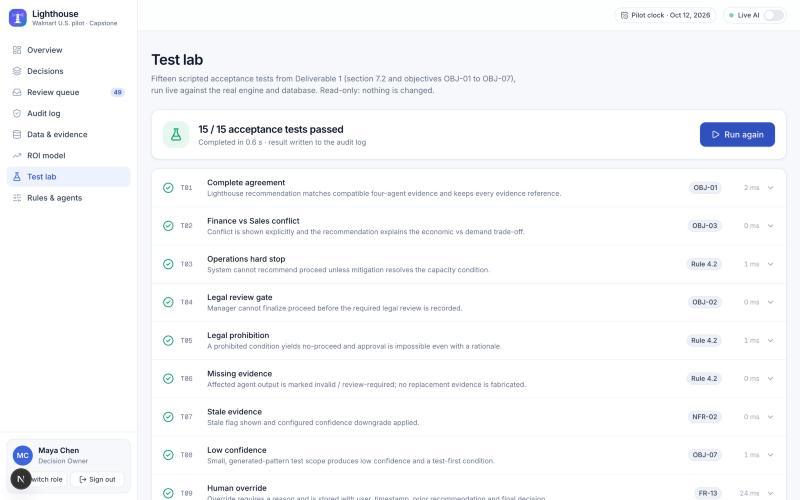
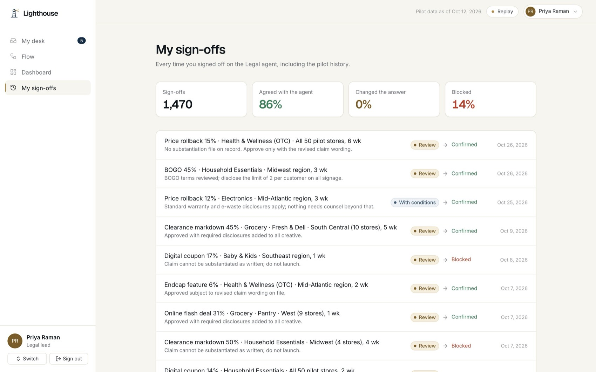
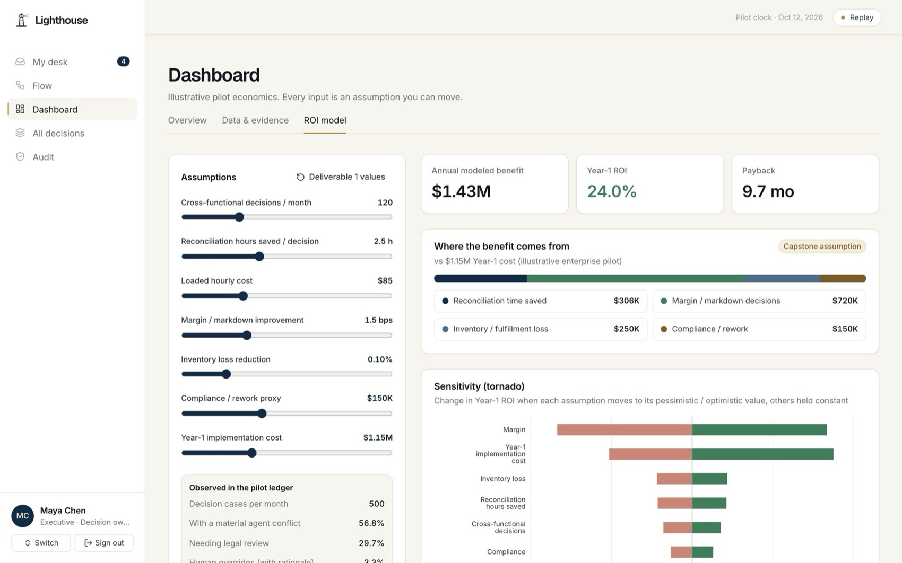
With Replay on, outcomes are exactly as listed. Live AI wording varies a little from run to run, but the governance rules fix the outcome.
| Case | Scenario | Starting state | Who must sign · what it shows |
|---|---|---|---|
| D-2026-001 | 15% OTC rollback, “clinically proven” claim | Proposed (submit live) | Legal only. The anchor case: legal gate, then approval. |
| D-2026-002 | 8% pantry rollback, supplier-funded | With executive | Nobody: all four cleared automatically. With conditions |
| D-2026-003 | 28% Home & Kitchen rollback | In sign-off | Finance. Demand strong, economics fail: Hold. Best case for a human adjustment. |
| D-2026-004 | BOGO launching in 3 days | In sign-off | Operations (Legal already signed). Lead time beats launch: hard stop, Hold. |
| D-2026-005 | Hard seltzer BOGO in Texas | With executive | Nobody: a legal rule prohibits it. Reject, approval impossible. |
| D-2026-006 | Electronics during an inventory feed outage | In sign-off, Ops overdue | Operations is 54h overdue, so it escalates to Maya. Evidence invalid, never imputed. |
| D-2026-007 | Deli endcap on 18-day-old evidence | In sign-off | Sales, Operations, Legal: stale data drops every agent below 65% confidence. |
| D-2026-008 | 3-store baby digital coupon | In sign-off | Finance (hold) and Legal (children’s data). |
| D-2026-009 | 50% apparel clearance | In sign-off | Finance (reject) and Legal (reference-price rules). |
| D-2026-010 | Beauty coupon, skin-repair claim, California | In sign-off | Finance and Legal (privacy plus cosmetic-drug claim). |
| D-2026-011 | 8-week supplier endcap, all stores | In sign-off | Legal (exclusivity terms). |
| D-2026-012 | Move 6,000 TVs before the holidays | Approved | Proposed by Luis (Operations); shows a sealed case. |
Desk counts after a reset: Maya 3 · Hannah 2 · David 4 · Luis 3 · Priya 5.
| Layer | What it is | When it is used |
|---|---|---|
| Gemini (free) | The newest Gemini Flash model the key can use | First choice on the deployed site |
| Groq (free) | gpt-oss-120b → Qwen → gpt-oss-20b | Automatically if Gemini errors or times out (15s). A failed provider is skipped for 10 minutes. |
| Rules engine | Deterministic version of each agent | If no AI answers; cards are labelled “Rules engine” |
| Replay | The saved AI answers for each demo case | Name menu (top right) → Presenter, when the network is unreliable |
Tools compute, agents reason, guardrails enforce, people sign, the executive decides. Numbers always come from deterministic tools. The model returns a recommendation, confidence, risk, conditions and cited evidence IDs (schema-validated). Guardrails remove made-up citations and enforce hard limits.
| Question | Answer |
|---|---|
| Why doesn’t every lead review every case? | Review fatigue. Leads sign only where their agent has a concern; clean answers clear automatically. Every lane still shows who owns it, and any lead can step in. |
| Isn’t the human just rubber-stamping the AI? | The record says otherwise. Changing an answer needs a reason and is shown side by side with the AI; the Dashboard tracks how often each department confirmed, changed or blocked its agent. |
| What if a lead never responds? | After 48 hours a Sales, Finance or Ops lane escalates and the executive may decide without it, with a reason. Legal never escalates. |
| Can the executive overrule Legal? | No. A Legal rejection or a prohibiting rule locks approval for everyone. |
| Why is the administrator separate? | Separation of duties: the person who sets the rules and thresholds can’t also decide cases under them. |
| Is this real Walmart data? | Demand patterns are real public Walmart data from Kaggle (M5 daily sales; 45-store weekly sales), calibrated to the FY2026 10-K. Stores, inventory, rules and costs are generated and labelled. No Walmart internal data. |
| What if the AI hallucinates? | Numbers come from tools; the AI must cite evidence IDs; unknown IDs are removed; hard limits apply after the AI answers (test T12). The department lead is the last check. |
| Prompt injection? | User text is passed as quoted data, screened for injection patterns, and never treated as instructions (test T13). |
| Does it meet the 60-second target? | Live runs take about 6–15 seconds; a single-agent re-run about 3–5; reconciliation takes milliseconds (test T14). |